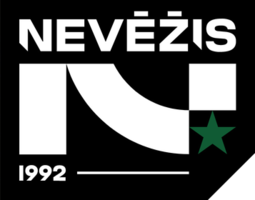

Kėdainių „Nevėžis-Optibet“

Įkūrimo data:
1992
Vyr. treneris:
Gediminas Petrauskas
Dabartinė komandos sudėtis
- Bakhtadze, Avtandil
- Starks, Tahjon
- Doualla, Daryl
- Smajlagič, Sven
- Murauskas, Paulius
- Kuksiks, Rihards
- Lavrinovičius, Danielius
- Plintauskas, Armandas
- Sylla, Amar
- Vilys, Domantas
- Valinskas, Marius